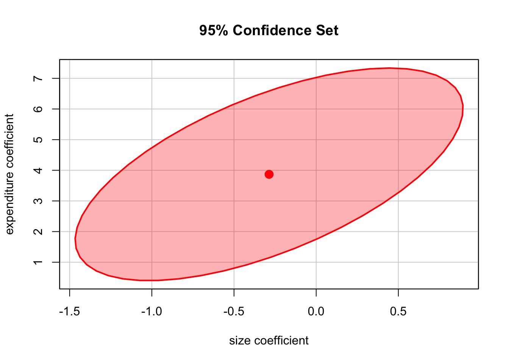

7 Hypothesis Tests and Confidence intervals in Multiple Regression
This chapter discusses methods that allow to quantify the sampling uncertainty inherent to the OLS estimator of coefficients in multiple regression models. The basis for this are standard errors, hypothesis tests and confidence intervals which, just as for the simple linear regression model, can be computed using basic R functions. We will also tackle the issue of testing joint hypothesis on coefficients of multiple regression models.
7.1 Hypothesis Tests and Confidence Intervals for a Single Coefficient
First, we will discuss how to compute standard errors, how to test hypotheses and how to construct confidence intervals for a single regression coefficient \(\beta_j\) in a multiple regression model. The basic idea is summarized in Key Concept 7.1.
Key Concept 7.1
Testing the Hypothesis \(\beta_j = \beta_{j,0}\)
Against the Alternative \(\beta_j \neq \beta_{j,0}\)
- Compute the standard error of \(\hat{\beta_j}\)
- Compute the \(t\)-statistic, \[t = \frac{\hat{\beta}_j - \beta_{j,0}} {SE(\hat{\beta_j})}\]
- Compute the \(p\)-value, \[p\text{-value} = 2 \Phi(-|t^{act}|)\]
summary().
It is straightforward to verify that principles of testing single hypothesis about the significance of coefficients in the multiple regression model are just as in in the simple regression model.
You can easily see this by inspecting the coefficient summary of the regression model
\[ TestScore = \beta_0 - \beta_1 \times size - \beta_2 \times english + u \]
already discussed in chapter 6. Let us review this:
model <- lm(score ~ size + english, data = CASchools)
summary(model)##
## Call:
## lm(formula = score ~ size + english, data = CASchools)
##
## Residuals:
## Min 1Q Median 3Q Max
## -48.845 -10.240 -0.308 9.815 43.461
##
## Coefficients:
## Estimate Std. Error t value Pr(>|t|)
## (Intercept) 686.03224 7.41131 92.566 < 2e-16 ***
## size -1.10130 0.38028 -2.896 0.00398 **
## english -0.64978 0.03934 -16.516 < 2e-16 ***
## ---
## Signif. codes: 0 '***' 0.001 '**' 0.01 '*' 0.05 '.' 0.1 ' ' 1
##
## Residual standard error: 14.46 on 417 degrees of freedom
## Multiple R-squared: 0.4264, Adjusted R-squared: 0.4237
## F-statistic: 155 on 2 and 417 DF, p-value: < 2.2e-16You may check that these quantities are computed as in the simple regression model by computing the \(t\)-statistics or \(p\)-values by hand using the output above and R as a calculator.
For example, using the definition of the \(p\)-value for a two-sided test as given in Key Concept 7.1, we can confirm the \(p\)-value for a test of the hypothesis that the coeffiecient \(\beta_0\), that is the coefficient on (intercept), is zero to be approximatley zero.
2*(1-pnorm(abs(92.566)))## [1] 0Remember that, given a vector of quantiles, pnorm() calculates associated probabilities for the standard normal distribution by default which is suitable here since we approximate with the standard normal distribution.
Key Concept 7.2
Confidence Intervals for a Single Coefficient in Multiple Regression
A \(95\%\) two-sided confidence interval for the coefficient \(\beta_j\) is an interval that contains the true value of \(\beta_j\) with a \(95 \%\) probability; that is, it contains the true value of \(\beta_j\) in \(95 \%\) of all randomly drawn samples. Equivalently, it is the set of values of \(\beta_j\) that cannot be rejected by a \(5 \%\) two-sided hypothesis test. When the sample size is large, the \(95 \%\) confidence interval for \(\beta_j\) is \[\left[\hat{\beta_j}- 1.96 \times SE(\hat{\beta}_j), \hat{\beta_j} + 1.96 \times SE(\hat{\beta_j})\right].\]
7.2 An Application to Test Scores and the Student-Teacher Ratio
Let us take a look at the regression from section 6.3 again.
Computing individual confidence intervals for the coefficients in the multiple regression model can be done analogously as in the simple regression model using the function confint().
model <- lm(score ~ size + english, data = CASchools)
confint(model)## 2.5 % 97.5 %
## (Intercept) 671.4640580 700.6004311
## size -1.8487969 -0.3537944
## english -0.7271113 -0.5724424We note that \(95\%\) confidence intervals for all three coefficients are computed.
If we want to compute confidence intervals at another level of \(\alpha=0.1\) say, we just have to set the argument level in our call of confint() accordingly.
confint(model, level = 0.9)## 5 % 95 %
## (Intercept) 673.8145793 698.2499098
## size -1.7281904 -0.4744009
## english -0.7146336 -0.5849200The output now reports the desired \(90\%\) confidence intervals for all model coefficients.
Knowing how to use
Can the null hypothesis that a change in the student-teacher ratio, size, has no significant influence on test scores, scores, — if we control for the percentage of students learning English in the district, english, — be rejected at the \(10\%\) and the \(5\%\) level of significance?
The outputs above tell us that zero is not an element of the computed confidence intervals for the coefficient of size such that we can reject the null hypothesis at significance levels of \(5\%\) and \(10\%\).
Note that rejection at the \(5\%\)-level implies rejection at the \(10\%\) level (why?).
The same conclusion can be made when beholding the \(p\)-value for size: \(0.00398 < 0.05 = \alpha\).
The \(95\%\) confidence interval tells us that we can be \(95\%\) confident that a one-unit decrease in the student-teacher ratio has an effect on test scores that lies in the interval with a lower bound of \(-1.8488\) and an upper bound of \(-0.3538\).
Another Augmentation of the Model
What is the average effect on test scores of reducing the student-teacher ratio when the expenditures per pupil and the percentage of english learning pupils are held constant?
We can pursue this question by augmenting our model equation by an additional regressor that is a measure for spendings per pupil. Using ?CASchools we find that CASchools contains the variable expenditure which provides expenditures per student.
The model we want the estimate now is
\[ TestScore = \beta_0 + \beta_1 \times size + \beta_2 \times english + \beta_3 \times expenditure + u \]
with \(expenditure\) the total amount of expenditures per pupil in the district (thousands of dollars).
Let us now estimate the model:
# Scale expenditure to thousands of dollars
CASchools$expenditure <- CASchools$expenditure/1000
# estimate the model
model <- lm(score ~ size + english + expenditure, data = CASchools)
summary(model)##
## Call:
## lm(formula = score ~ size + english + expenditure, data = CASchools)
##
## Residuals:
## Min 1Q Median 3Q Max
## -51.340 -10.111 0.293 10.318 43.181
##
## Coefficients:
## Estimate Std. Error t value Pr(>|t|)
## (Intercept) 649.57795 15.20572 42.719 < 2e-16 ***
## size -0.28640 0.48052 -0.596 0.55149
## english -0.65602 0.03911 -16.776 < 2e-16 ***
## expenditure 3.86790 1.41212 2.739 0.00643 **
## ---
## Signif. codes: 0 '***' 0.001 '**' 0.01 '*' 0.05 '.' 0.1 ' ' 1
##
## Residual standard error: 14.35 on 416 degrees of freedom
## Multiple R-squared: 0.4366, Adjusted R-squared: 0.4325
## F-statistic: 107.5 on 3 and 416 DF, p-value: < 2.2e-16We see that the estimated effect of a one unit change in the student-teacher ratio on test scores with expenditures per pupil and the share of english learning pupils held constant is rather small (\(-0.29\)). What is more, the coefficient on \(size\) is not significantly different from zero anymore even at the level of \(10\%\) since \(p\text{-value}=0.55\). Can You come up with an interpretation for these findings (see chapter 7.1 of the book)? Mathematically, the insignificance of \(\beta_1\) could be due to a larger standard error of \(\hat{\beta}_1\) resulting from adding \(expenditure\) to the model so that we are estimating the true coefficent on \(size\) less precisely. This illustrates the issue of strongly correlated regressors (imperfect multicollinearity). The correlation between \(size\) and \(expenditures\) can be computed using cor().
cor(CASchools$size, CASchools$expenditure)## [1] -0.6199822Altogether we conclude that the new model provides no evidence that changing the student-teacher ratio, e.g. by hiring new teachers, has any effect on the test scores while keeping expenditures per student and the share of english learners constant at the same time.
7.3 Joint Hypothesis Testing Using the \(F\)-Statistic
The estimated model is
\[ \widehat{TestScore} = 649.58 -0.29 \times size - 0.66 \times english + 3.87 \times expenditure. \]
Now, can we reject the hypothesis that the coefficient on \(size\) and and the coefficient on \(expenditure\) are zero? To answer this question, we have to resort to methods that allow joint hypothesis testing. A joint hypothesis imposes restrictions on multiple regression coefficients. This is different from conducting individual \(t\)-tests where a single resitriction is imposed on a single coefficient. Chapter 7.2 of the book explains why testing the individual coefficients one at a time is different from testing them jointly.
The homoskedasticity-only \(F\)-Statistic is given by
\[ F = \frac{(SSR_{restricted} - SSR_{unrestricted})/q}{SSR_{unrestricted} / (n-k_{unrestricted}-1)} \]
with \(SSR_{restricted}\) the sum of squared residuals from the restricted regression, i.e. the regression where we impose the restriction. \(SSR_{unrestricted}\) is the sum of squared residuals from the full model, \(q\) is the number of restriction under the null and \(k\) is the number of regressors in the unrestricted regression.
Luckily, it is fairly easy to conduct \(F\)-tests in R. We can use the function linearHypothesis() which is contained in the car package.
# estimate the multiple regression model
model <- lm(score ~ size + english + expenditure, data = CASchools)
# execute the function on the model object and provide both linear restrictions
# to be tested as strings
linearHypothesis(model, c("size=0", "expenditure=0"))## Linear hypothesis test
##
## Hypothesis:
## size = 0
## expenditure = 0
##
## Model 1: restricted model
## Model 2: score ~ size + english + expenditure
##
## Res.Df RSS Df Sum of Sq F Pr(>F)
## 1 418 89000
## 2 416 85700 2 3300.3 8.0101 0.000386 ***
## ---
## Signif. codes: 0 '***' 0.001 '**' 0.01 '*' 0.05 '.' 0.1 ' ' 1From the output we can infer that the \(F\)-statistic for this joint hypothesis test is about \(8.01\) and the corresponding \(p\)-value is \(0.0004\). Thus we can reject the null hypothesis that both coefficients are zero at any level of significance commonly used in practice.
Note:
The standard output of a model summary also reports an \(F\)-statistic and the corresponding \(p\)-value. The null hypothesis belonging to this \(F\)-test is that all of the population coefficients in the model except for the intercept are zero, so the hypotheses pair is
\[H_0: \beta_1=0, \ \beta_2 =0, \ \beta_3 =0 \quad \text{vs.} \quad H_1: \beta_j \neq 0 \ \text{for at least one} \ j=1,2,3.\]
This is also called the “overall” regression \(F\)-statistic and the null hypothesis is obviously different from testing if only \(\beta_1\) and \(\beta_3\) are zero.
We will now check that the \(F\)-statistic belonging to the \(p\)-value listed in the model’s summary coincides with the result reported by linearHypothesis().
# execute the function on the model object and provide the linear restriction
# to be tested as strings
linearHypothesis(model, c("size=0","english=0","expenditure=0"))## Linear hypothesis test
##
## Hypothesis:
## size = 0
## english = 0
## expenditure = 0
##
## Model 1: restricted model
## Model 2: score ~ size + english + expenditure
##
## Res.Df RSS Df Sum of Sq F Pr(>F)
## 1 419 152110
## 2 416 85700 3 66410 107.45 < 2.2e-16 ***
## ---
## Signif. codes: 0 '***' 0.001 '**' 0.01 '*' 0.05 '.' 0.1 ' ' 1# Access the F-statistic from the model's summary
summary(model)$fstatistic## value numdf dendf
## 107.4547 3.0000 416.0000The test rejects the null hypothesis that the model has no power in explaining test scores rather clearly.
7.4 Confidence Sets for Multiple Coefficients
Based on the \(F\)-statistic that we have previously encountered, we can specify confidence sets. Confidence sets are analogous to confidence intervals for single coefficients. As such, confidence sets consist of combinations of coefficients that contain the true combination of coefficients in, \(95\%\) say, of all cases if we could infinitely draw random samples, just as in the univariate case. Put differently, a confidence set is the set of coefficient combinations for which we cannot reject a joint null hypothesis tested using a \(F\)-test.
If we consider two coefficients, their confidence set is an ellipse which is centered around the point defined by both coefficient estimates. Again, there is a very convenient way to plot the confidence set for two coefficients of model objects, namely the function confidenceEllipse() which is also coming with the car package.
In the following, we plot the \(95\%\) confidence ellipse for the coefficients on size and expenditure from the regression conducted above. By specifying the additional argument fill, the confidence set is colored which gives us a better impression which set of coefficients is meant.
# Draw the 95% confidence set for coefficients on size and expenditure
confidenceEllipse(model,
fill = T,
which.coef = c("size","expenditure"),
main = "95% Confidence Set"
)
We see that the ellipse is centered around \((-0.29, 3.87)\) i.e. the pair of coefficients estimates on \(size\) and \(expenditure\). What is more, \((0,0)\) is not element of the \(95\%\) confidence set so that we can reject \(H_0: \beta_1 = 0, \ \beta_3 = 0\).
7.5 Model Specification for Multiple Regression
Choosing a regression specifaction i.e. selecting the variables to be included in a regression model can be quite cumbersome. However, there are some guidelines how to do this. The goal is clear: obtaining an unbiased estimation of the causal effect of interest. As a starting point, one should think about omitted variables, that is to avoid a possible estimation bias by using suitable control variables (omitted variables bias in the context of multiple regression is explained in Key Concept 7.3). A second step could be to compare different regression model specifications by measures of fit. However, as we shall see one should not rely solely on \(\overline{R^2}\).
Key Concept 7.3
Omitted Variable Bias in Multiple Regression
Omitted variable bias is the bias in the OLS estimator that arises when one or more included regressors are correlated with an omitted variable. For omitted variable bias to arise, two things must be true:
- At least one of the included regressors must be correlated with the omitted variable.
- The omitted variable must be a determinant of the dependent variable, \(Y\).
We will now discuss an example were we face a potential omitted variable bias in a multiple regression model:
Consider again the estimated regression equation
\[ \widehat{TestScore} = \underset{(8.7)}{686.0} - \underset{(0.43)}{1.10} \times size - \underset{(0.031)}{0.650} \times english. \]
We are interested in estimated the causal effect of class size on test score. In this estimation, there might be a bias due to omitting “outside learning opportunities” from our regression sice a measure like this could be a determinant of the students test scores and could also be correlated with both regressors already included in the model (so that both conditions of Key Concept 7.3 are fulfilled). “outside learning opportunities” is a complicated concept that is difficult to quantify. A surrogate we can consider instead is the students’ economic backgroud which should be strongly related to the outside learning opportunities: think of wealthy parents that are able to provide time and/or money for private tuition of there children. We thus augment the model with the variable lunch, the percentage of students that qualify for a free or subsidized lunch in school due to family incomes below a certain threshold, and estimate the model again.
# estimate the model and print summary to console
model <- lm(score ~ size + english + lunch, data = CASchools)
summary(model)##
## Call:
## lm(formula = score ~ size + english + lunch, data = CASchools)
##
## Residuals:
## Min 1Q Median 3Q Max
## -32.849 -5.151 -0.308 5.243 31.501
##
## Coefficients:
## Estimate Std. Error t value Pr(>|t|)
## (Intercept) 700.14996 4.68569 149.423 < 2e-16 ***
## size -0.99831 0.23875 -4.181 3.54e-05 ***
## english -0.12157 0.03232 -3.762 0.000193 ***
## lunch -0.54735 0.02160 -25.341 < 2e-16 ***
## ---
## Signif. codes: 0 '***' 0.001 '**' 0.01 '*' 0.05 '.' 0.1 ' ' 1
##
## Residual standard error: 9.08 on 416 degrees of freedom
## Multiple R-squared: 0.7745, Adjusted R-squared: 0.7729
## F-statistic: 476.3 on 3 and 416 DF, p-value: < 2.2e-16Thus, the estimated regression line is
\[ \widehat{TestScore} = \underset{(4.7)}{700.15} - \underset{(0.24)}{1.00} \times size - \underset{(0.032)}{0.12} \times english + \underset{(0.022)}{0.55} \times lunch. \]
We observe no substantial changes in the conclusion about the effect of size: the coefficient changes by only \(0.1\) and keeps its significance.
Although the difference in estimated coefficients is not big in this case, it might be a good idea to keep lunch in the model to make the assumption of conditional mean independence more credible (see chapter 7.5 of the book).
Model Specification in Theory and in Practice
Key Concept 7.4
\(R^2\) and \(\overline{R^2}\): What They Tell You — and What They Don’t
The \(R^2\) and \(\overline{R^2}\) tell you whether the regressors are good at predicting, or “explaining” the values of the independent variable in the sample of data at hand. if the \(R^2\) (or \(\overline{R^2}\)) is nearly \(1\), then the regressors produce good prediction of the dependent variable in that sample, in the sense that the variance of OLS residuals is small compared to the variance of the dependent variable. If the \(R^2\) (or \(\overline{R^2}\)) is nearly \(0\), the opposite is true.
The \(R^2\) and \(\overline{R^2}\) do not tell you whether:
- An included variable is statistically significant.
- The regressors are true cause of the movements in the dependent variable
- There is omitted variable bias, or
- You have chosen the most appropriate set of regressors.
Key Concept 7.4 names some common pitfalls when using \(R^2\) and \(\overline{R^2}\) to evaluate the predictive ability of regression models.
For example, think of regressing \(TestScore\) on \(PLS\) which measures the available parking lot space in thousand square feet. You are likely to observe a significant coefficient of reasonable magnitude and moderate to high values for \(R^2\) and \(\overline{R^2}\). The reason for this is that parking lot space is correlated with many determinants of the test score like location, class size, financial endowment and so on. Although we don not have observations on \(PLS\), we can use R to generate some relatively realistic data.
# Generate observations for parking lot space
CASchools$PLS <- 5 + 0.6*CASchools$expenditure + 0.6*CASchools$income + CASchools$size/100 + rnorm(nrow(CASchools), sd = 1)
# plot parking lot space against test score
plot(CASchools$PLS,
CASchools$score,
xlab = "Parking Lot Space",
ylab = "Test Score",
pch = 20,
col = "steelblue"
)
# regress test score or PLS
summary(lm(score ~ PLS, data = CASchools))##
## Call:
## lm(formula = score ~ PLS, data = CASchools)
##
## Residuals:
## Min 1Q Median 3Q Max
## -50.16 -14.25 0.65 13.56 49.88
##
## Coefficients:
## Estimate Std. Error t value Pr(>|t|)
## (Intercept) 6.224e+02 7.715e+00 80.679 < 2e-16 ***
## PLS 9.915e-03 2.393e-03 4.144 4.13e-05 ***
## ---
## Signif. codes: 0 '***' 0.001 '**' 0.01 '*' 0.05 '.' 0.1 ' ' 1
##
## Residual standard error: 18.7 on 418 degrees of freedom
## Multiple R-squared: 0.03946, Adjusted R-squared: 0.03717
## F-statistic: 17.17 on 1 and 418 DF, p-value: 4.131e-05using lm we find that the coefficient on \(PLS\) is positive and significantly different from zero. Also \(R^2\) and \(\overline{R^2}\) are about \(0.47\) which is a lot more than the roughly \(0.05\) observed when regressing test score on class size.
This suggests that increasing the parking lot space boosts a school’s test scores and that the model (7.1) does even better in explaining heterogeneity in the dependent variable than a model with \(size\) as the regressor. Keeping in mind how \(PLS\) is constructed this comes of no surprise. It is evident that the high \(R^2\)
7.6 Analysis of the Test Score Data Set
Chapter 6 and some of the previous sections have stressed that it is important to include control variables in regression models if it is plausible that there are omitted factors that cannot be measured directly. Recall that in our example of test scores, we are interested in estimating the causal effect of a change in the student-teacher ratio on test scores. In what follows, we will provide an example how to use multiple regression models in order to alleviate omitted variable bias and we will demonstrate how to report results using R.
So far we have considered two variables that control for unobservable student characteristics which correlate with the student-teacher ratio
\(english\), the percentage of english learning students
\(lunch\), the share of students that qualify for a subsidized or even a free lunch at school
Another new variable provided with CASchools is \(calworks\), the percentage of students that qualify for the
# estimate correlation between calworks and lunch
cor(CASchools$calworks, CASchools$lunch)## [1] 0.7394218There is no unabigious way to proceed when deciding which variable to use. In any case it is not a good idea to use both variables as regressors having in mind consequences of colinearity. Therefore, we will also consider alternative model specifications.
For a start, we plot student characteristics against test scores.
par(mfrow = c(1,3))
m <- rbind(c(1, 2), c(3, 0))
layout(m)
plot(score ~ english,
data = CASchools,
col = "steelblue",
pch = 20,
xlim = c(0,100),
main = "Percentage of English language learners")
plot(score ~ lunch,
data = CASchools,
col = "steelblue",
pch = 20,
main = "Percentage qualifying for reduced price lunch")
plot(score ~ calworks,
data = CASchools,
col = "steelblue",
pch = 20,
xlim = c(0,100),
main = "Percentage qualifying for income assistance")
We see that all relationships are negative. We can use R to estimate the correlation coefficients.
# estimate correlation between student characteristics and test scores
cor(CASchools$score, CASchools$english)## [1] -0.6441238cor(CASchools$score, CASchools$lunch)## [1] -0.868772cor(CASchools$score, CASchools$calworks)## [1] -0.6268533We will consider \(5\) different model equations:
\[\begin{align*} (I) \quad \widehat{TestScore} =& \, \beta_0 + \beta_1 \times size + u \\ (II) \quad \widehat{TestScore} =& \, \beta_0 + \beta_1 \times size + \beta_2 \times english + u \\ (III) \quad \widehat{TestScore} =& \, \beta_0 + \beta_1 \times size + \beta_2 \times english + \beta_3 \times lunch + u \\ (IV) \quad \widehat{TestScore} =& \, \beta_0 + \beta_1 \times size + \beta_2 \times english + \beta_4 \times calworks + u \\ (V) \quad \widehat{TestScore} =& \, \beta_0 + \beta_1 \times size + \beta_2 \times english + \beta_3 \times lunch + \beta_4 \times calworks + u \end{align*}\]The best way to communicate regression results is in a table. The stargazer package is very convenient for this purpose. It provides a function that generates professionally looking HTML and \(\LaTeX\) tables that satisfy scienctific standards. One simply has to provide one or multiple object(s) of class lm and the rest is done by the function stargazer().
# load the stargazer library
library(stargazer)
# estimate different model specifications
spec1 <- lm(score ~ size , data = CASchools)
spec2 <- lm(score ~ size + english, data = CASchools)
spec3 <- lm(score ~ size + english + lunch, data = CASchools)
spec4 <- lm(score ~ size + english + calworks, data = CASchools)
spec5 <- lm(score ~ size + english + lunch + calworks, data = CASchools)
# generate a Latex table using stargazer
stargazer(spec1, spec2, spec3, spec4, spec5,
column.labels = c("(I)", "(II)", "(III)", "(IV)", "(V)")
)| Dependent variable: | |||||
| score | |||||
| (I) | (II) | (III) | (IV) | (V) | |
| spec1 | spec2 | spec3 | spec4 | spec5 | |
| size | -2.280*** | -1.101*** | -0.998*** | -1.308*** | -1.014*** |
| (0.480) | (0.380) | (0.239) | (0.307) | (0.240) | |
| english | -0.650*** | -0.122*** | -0.488*** | -0.130*** | |
| (0.039) | (0.032) | (0.033) | (0.034) | ||
| lunch | -0.547*** | -0.529*** | |||
| (0.022) | (0.032) | ||||
| calworks | -0.790*** | -0.048 | |||
| (0.053) | (0.061) | ||||
| Constant | 698.933*** | 686.032*** | 700.150*** | 697.999*** | 700.392*** |
| (9.467) | (7.411) | (4.686) | (6.024) | (4.698) | |
| Observations | 420 | 420 | 420 | 420 | 420 |
| R2 | 0.051 | 0.426 | 0.775 | 0.629 | 0.775 |
| Adjusted R2 | 0.049 | 0.424 | 0.773 | 0.626 | 0.773 |
| Residual Std. Error | 18.581 (df = 418) | 14.464 (df = 417) | 9.080 (df = 416) | 11.654 (df = 416) | 9.084 (df = 415) |
| F Statistic | 22.575*** (df = 1; 418) | 155.014*** (df = 2; 417) | 476.306*** (df = 3; 416) | 234.638*** (df = 3; 416) | 357.054*** (df = 4; 415) |
| Note: | *p<0.1; **p<0.05; ***p<0.01 | ||||
The table states that \(scores\) is the dependent variable and that we consider \(5\) models. We see that the coloumns of Table 7.1 contain all the information provided by summary() for the regression models spec1 to spec5: the coefficient section of the table presents coefficients estimates equipped with signifiance codes (asterisks) and standard errors in parantheses below. Although there a no \(t\)-statistics, it is straightforward for the reader to compute them simply by dividing a coefficient estimate by the correspondung standard error. In the botton of the table we find summary statistics for each model and a legend. For an in-depth discussion of the tabular presentation of regression results, see chapter 7.6 of the book.
What can we conclude from the model comparison?
We see that adding control variables roughly halves the coefficient on
size. Also the coefficient is not very sensitive to the set of control variables used. The conclusion is that decreasing the student-teacher ratio ceteris paribus by one unit leads to an estimated average increase in test scores of about \(1\) point.Adding student characteristics as controls boosts \(R^2\) and \(\overline{R^2}\) from \(0.049\) (
spec1) up to \(0.773\) (spec3andspec5), so we can consider these variables as suitable predictors for test scores. Morever, the estimated coefficients on all control variables are consistent with the impressions gained from figure 7.2.We see that the control variables are not always individually statistically significant: for example in
spec5we see that the coefficient on \(calworks\) is not significantly different from zero at the level of \(5\%\) since \(\lvert-0.048/0.061\rvert=0.79 < 1.64\). We also observe that the effect on the estimate (and its standard error) of the coefficient on \(size\) of adding \(calworks\) to the base specificationspec3is negligible. We can therefore considercalworksas a redundant control variable in this setting.